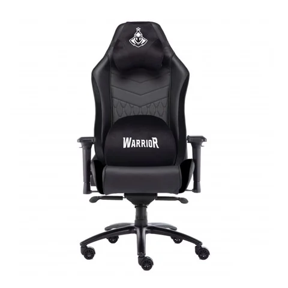

Warrior – Archer Series – WGC403
- Nhà sản xuất: Warrior
- Bảo hành: 12 tháng
- Tình trạng: Mới 100%
- Giá bán: 4,490,000 VNĐ
Mô tả sản phẩm:
Ghế cao cấp dành cho game thủ
Chất liệu da PU chống xước, một số chi tiết làm bằng nhung
Đệm lưng và đệm ngồi có lỗ thoát khí
Trực thủy lực Class 4 với độ ổn định cao
Bệ đỡ: Kiểu cánh bướm
Đệm mông ghế được làm bằng khuôn sốp lạnh ( cold molded foam)
Lưng ghế được làm bằng đệm nguyên chất ( original foam)
Ghế có khả năng ngả được 160 độ, xoay 180 độ
Tay ghế 3D
Chân, bánh xe nhựa được thiết kế giúp giảm thiểu tiếng ồn trong quá trình sử dụng